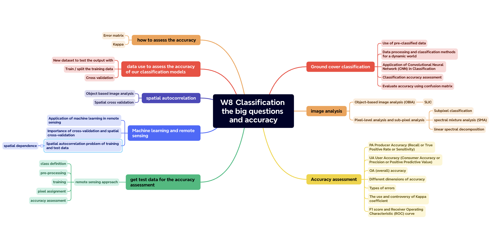
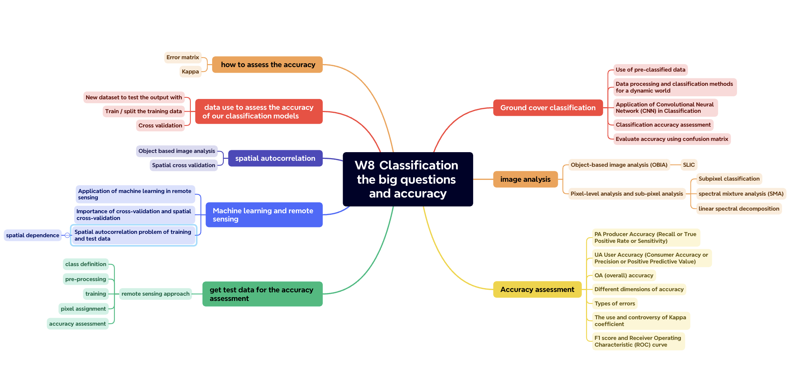
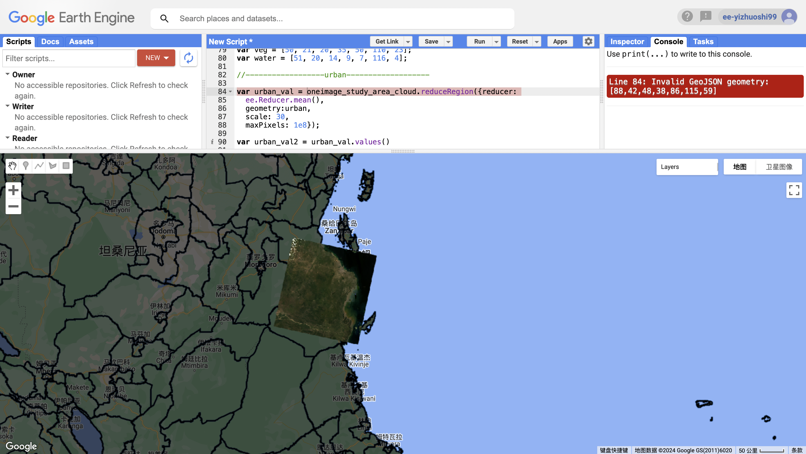
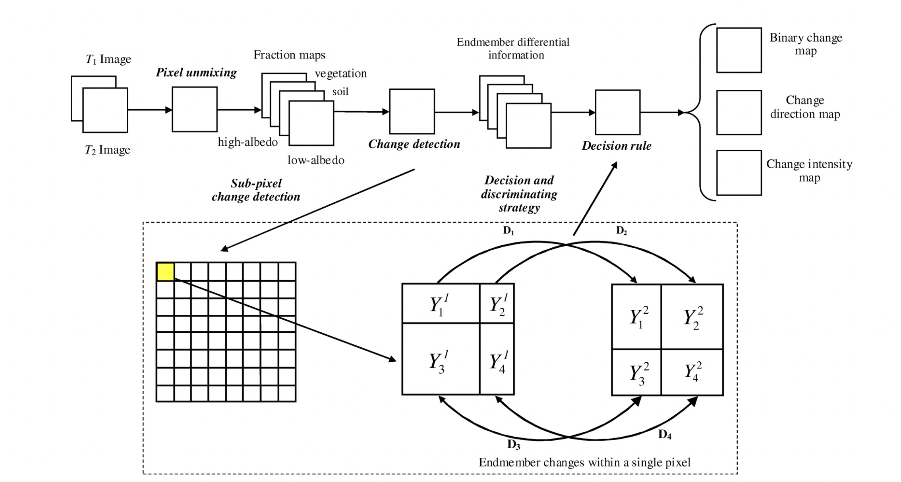

knitr::include_graphics("figures/week8_mindmap.png")
This is a mind map of this week’s lecture.
knitr::include_graphics("figures/week8_mindmap.png")
For the data and methods of this week’s content, I learned about ground cover classification, utilizing pre-classified data and dynamic world data, and improving classification accuracy through advanced methods such as convolutional neural networks (CNN). In addition, sub-pixel analysis improves the fine-grainedness of classification by calculating the proportion of different ground cover types within a pixel. We also learned accuracy evaluation, using indicators such as confusion matrix, producer accuracy, user accuracy, and overall accuracy to evaluate classification results. It also discusses the use and controversy of Kappa coefficient, as well as the application of F1 score and ROC curve in accuracy evaluation. But at the same time, these methods also have limitations. Although machine learning methods are powerful, they rely on large amounts of high-quality training data, and model decisions are sometimes difficult to interpret. Accuracy assessment methods (such as Kappa coefficient) are controversial and may not be appropriate in all situations. With the continuous advancement of deep learning and other advanced machine learning technologies, it is expected that the accuracy and efficiency of remote sensing data analysis will be further improved. The development of new accuracy assessment metrics and methods may provide more comprehensive and accurate assessment methods.
This week’s practical session mentions a variety of resources and research, including using Google Earth Engine to integrate Sentinel-1, Sentinel-2 and PlanetScope satellite data for object-based mapping of informal settlements, and various projects using cloud services for remote sensing. techniques and strategies. From this I learned 1. Advanced classification methods: How to use advanced classification methods, including sub-pixel classification, linear spectral unmixing and spectral mixing analysis. These methods allow for more precise identification and classification of ground objects, especially in complex urban environments. 2. Change detection: How to perform change detection, which is an important area in remote sensing research, especially in monitoring urbanization processes, environmental changes, etc. 3. How to implement these advanced classification and change detection methods in Google Earth Engine. This includes loading and styling vector data, processing Landsat data, using cloud masking capabilities, and performing object-based classification. The following is a screenshot when I practiced this week’s content in GEE. I encountered a bug that I am trying to solve.
knitr::include_graphics("figures/w8_practical.png")
Of what I learned this week, I was primarily interested in using remote sensing techniques to analyze land cover changes. Remote sensing technology has become an important tool for detecting land cover changes because it can provide large-scale, multi-temporal surface information. The following are specific methods and their applications.
Gómez, White and Wulder (2016) discuss methods and advances in land cover classification using optical remote sensing time series data. The article first points out that accurate land cover information is very important for scientific monitoring and reporting. Earth observation (EO) data enables consistent and reliable monitoring and mapping of land cover and its changes over large areas. The increase in EO data—particularly from the Landsat archive (soon to include Sentinel-2 data)—as well as improvements in image synthesis methods have now enabled the delivery of annual, seamless surface reflectance products. These data products support the development of annual land cover products that can be guided and constrained by change detection results. In addition, the article also explores new inputs in land cover classification, such as stabilization of land cover transformation and temporal classification, combination of multi-scale and multi-sensor spectral data, multiple temporal spectral variables, and optimized training sample data.
Another study introduced a novel subpixel-level change detection method for urban land cover analysis from multi-temporal remote sensing imagery. This method is based on spectral hybrid analysis and decision-level fusion design, aiming to solve the problem of complex and variable land use/cover components within a single pixel due to spatial resolution limitations in medium-resolution remote sensing images for monitoring urban land cover changes. Traditional hard detection methods based on pure pixel assumptions often lead to a high degree of omissions and misjudgment errors by ignoring spectral variations within pixels, thereby reducing the overall accuracy of change detection (DU et al., 2014). To solve this problem, DU et al. (2014) proposed a change detection method based on a nonlinear spectral mixture model. They achieved sub-pixel level change detection by analyzing subtle changes within a single pixel and combining multiple compositional evidences. . This method uses a backpropagation neural network (BPNN) for spectral separation to generate abundance values of different ground components, and then analyzes the abundance values of all ground components and determines detailed change information through decision-level fusion. The figure below is a flow chart of this method. In experiments, this method was applied to multi-temporal Landsat Thematic Mapper and China-Brazil resource satellite remote sensing images for land cover change detection in urban areas.
knitr::include_graphics("figures/week8_sub-pixel.png")
Flowchart of the proposed sub-pixel level change detection approach Source: DU et al. (2014)
Both studies above used remote sensing technology to analyze land cover changes. They all highlight the importance of time series data in analyzing land cover changes. Dynamic changes in land cover can be better monitored and understood using multi-temporal data. The first study summarizes various methods and advances in land cover classification using optical remote sensing time series data, emphasizing the application of time series information in land cover classification and monitoring, including the generation of annual land cover products and the use of time series change information for land cover classification. Override mapping strategy. The application of time series data in land cover classification is discussed more broadly, not only in urban areas, but also in various land cover types including forests, farmland, etc., and a series of operational strategies and classification methods for integrating time series data are proposed. The second article focuses on proposing a new sub-pixel level change detection method, which is based on a nonlinear spectral mixture model and decision-level fusion, and can detect subtle land cover changes at the sub-pixel level. The author verified the effectiveness of the proposed method in urban land cover change detection through experiments, focusing on improving the accuracy of change detection in urban areas through sub-pixel change detection technology.
This week’s study gave me an in-depth understanding of the application of remote sensing technology in the analysis of land cover changes. Through advanced classification methods, change detection technology, and practical operations with Google Earth Engine, I have a more specific understanding of how to use remote sensing data for precise analysis. In particular, I have developed a strong interest in sub-pixel analysis methods because of their ability to reveal more nuanced proportions of land cover types within individual pixels, which is particularly important in complex urban environments. But I know the potential applications of these techniques and methods extend far beyond that. For example, these technologies can be used in various fields such as urban planning, disaster management, and agricultural monitoring. Especially today, when climate change and environmental protection have become the focus of global attention, remote sensing technology provides a powerful tool for monitoring changes in the earth’s surface. At the same time, I also started thinking about how to apply these technologies in future research or projects, how to integrate these technologies into my research field, and how they can help solve broader social, economic and environmental problems. In addition, in my previous studies, I also learned about accuracy tables. Through this week’s study, I understood how it is applied in the field of remote sensing, which deepened my understanding of confusion matrices.
DU, P., LIU, S., LIU, P., TAN, K. and CHENG, L. (2014). Sub-pixel change detection for urban land-cover analysis via multi-temporal remote sensing images. Geo-spatial Information Science, 17(1), pp.26–38. doi:https://doi.org/10.1080/10095020.2014.889268.
Gómez, C., White, J.C. and Wulder, M.A. (2016). Optical remotely sensed time series data for land cover classification: A review. ISPRS Journal of Photogrammetry and Remote Sensing, 116, pp.55–72. doi:https://doi.org/10.1016/j.isprsjprs.2016.03.008.